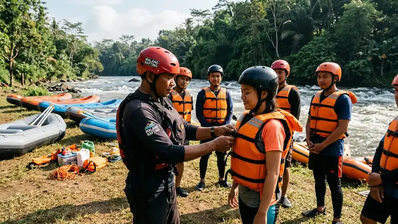

Keselamatan rafting di Malang bergantung pada pelampung dan helm yang pas, briefing pemandu, penilaian debit air, serta kepatuhan peserta terhadap instruksi selama di sungai.
- Pelampung, helm, dan perahu dalam kondisi baik adalah perlengkapan dasar.
- Skala enam kelas membantu menilai risiko arus sebuah rute.
- Briefing pemandu menjelaskan posisi duduk, aba-aba, dan tindakan saat terjatuh.
- Hujan deras, petir, dan air naik cepat adalah alasan kuat menunda kegiatan.
- Artikel ini bersifat informasi umum dan tidak menggantikan arahan pemandu.
Alat Keselamatan Apa yang Wajib Dipakai?
Alat dasar rafting meliputi pelampung (PFD) yang dikencangkan, helm, dayung, dan perahu karet dalam kondisi baik, ditambah tali lempar serta perlengkapan pertolongan pertama.
Pelampung harus pas di badan, tidak longgar, dan tidak naik ke arah dagu saat ditarik. Helm melindungi kepala dari benturan dayung atau batuan.
Pemandu biasanya membawa tali lempar, pisau pemotong tali, dan perlengkapan pertolongan pertama. Peserta berhak meminta pemeriksaan ulang bila ada tali kendur atau pelampung rusak.
Jangan menggunakan perlengkapan yang robek, bocor, atau tidak ukuran. Operator yang baik akan mengganti alat tanpa keberatan.
Bagaimana Skala Kelas Arus Menentukan Risiko?
Skala internasional membagi arus menjadi enam kelas; semakin tinggi kelas, semakin besar risiko, sehingga peserta pemula umumnya diarahkan ke Kelas II hingga III.
Skala dari American Whitewater berlaku luas dan memuat enam kelas dari I hingga VI, berdasarkan standar yang dipublikasikan hingga 2025. Kelas I bersifat tenang, sedangkan Kelas V dan VI sangat teknis dan hanya untuk ahli.
Debit air dapat menaikkan kelas sebuah jeram. Sungai yang ringan pada musim kemarau dapat menjadi jauh lebih deras setelah hujan lebat.
Apa Isi Briefing Keselamatan?
Briefing keselamatan menjelaskan posisi duduk, teknik mendayung, aba-aba pemandu, cara jatuh dan berenang di arus, serta prosedur saat perahu terbalik.
Peserta belajar menyesuaikan dayungan, misalnya maju, mundur, berhenti, atau merapat ke dasar perahu. Aba-aba pemandu singkat, jadi perhatikan dan ulangi bila belum jelas.
Briefing juga memuat tanda bahaya, titik berkumpul, dan peran peserta. Jangan ragu bertanya sebelum perahu berangkat.
Peserta yang melewatkan briefing meningkatkan risiko bagi diri sendiri dan tim. Jika Anda tertinggal, minta pemandu mengulang sebelum berangkat.
Apa yang Harus Dilakukan Jika Terjatuh dari Perahu?
Jika terjatuh, tetap tenang, posisikan kaki menghadap ke hilir dengan badan telentang, pegang dayung bila memungkinkan, dan ikuti aba-aba pemandu menuju tali atau perahu.
Posisi kaki ke hilir melindungi kepala dari benturan batuan. Pelampung membuat tubuh mengapung, jadi hindari menegakkan badan di arus dangkal karena kaki bisa tersangkut.
Jangan berusaha berdiri di arus deras. Berenanglah miring ke arah tepi sungai atau ke arah pemandu bila diperintahkan, dan raih tali lempar bila dilemparkan.
Tindakan ini adalah prinsip umum. Ikuti selalu instruksi pemandu karena kondisi sungai dapat berbeda di setiap titik.
Kapan Rafting Sebaiknya Ditunda?
Rafting sebaiknya ditunda bila hujan deras, banjir kiriman, air keruh dan naik cepat, atau petir terjadi, karena debit dan arus sungai dapat berubah mendadak.
Sungai di wilayah pegunungan dapat naik cepat karena hujan di hulu, bahkan saat cuaca di lokasi tampak cerah. Perubahan warna air menjadi keruh dan banyak sampah hanyut sering menjadi tanda.
Operator yang bertanggung jawab mengutamakan keselamatan daripada jadwal. Tanyakan kebijakan penjadwalan ulang atau pengembalian dana sebelum membayar.
Jika Anda merasa kondisi tidak aman, sampaikan kepada pemandu. Keputusan menunda lebih baik daripada memaksakan kegiatan.
Bagaimana Memastikan Operator Menerapkan Standar Keselamatan?
Tanyakan sertifikasi atau pengalaman pemandu, rasio pemandu terhadap perahu, kondisi alat, rencana evakuasi, dan asuransi, lalu bandingkan jawabannya dengan praktik di lokasi.
Perhatikan apakah pemandu melakukan pemeriksaan pelampung, memberi briefing lengkap, dan membawa tali lempar. Ketiganya menunjukkan kesiapan dasar.
Tanyakan juga lokasi fasilitas kesehatan terdekat dan prosedur bila terjadi cedera. Operator yang siap akan menjelaskan alur evakuasi dengan jelas.
Untuk perbandingan layanan lebih luas, termasuk paket dan biaya, baca panduan memilih operator rafting di Malang.
FAQ
Apakah rafting berbahaya?
Rafting memiliki risiko, tetapi dapat dikelola dengan alat yang layak, pemandu terlatih, briefing, dan penilaian kondisi sungai. Peserta wajib mengikuti instruksi pemandu.
Apakah anak-anak boleh mengikuti rafting?
Ketentuan usia dan tinggi badan ditentukan operator. Tanyakan batasan tersebut sejak awal dan pilih rute yang sesuai kemampuan anak.
Apa yang harus dilakukan jika perahu terbalik?
Tetap tenang, pegang tali atau dayung bila memungkinkan, ikuti posisi telentang dengan kaki ke hilir, dan dengarkan aba-aba pemandu hingga Anda aman.
Arya
penulis artikel yang sudah berpengalaman di dalam dunia wisata outbound Batu Malang.